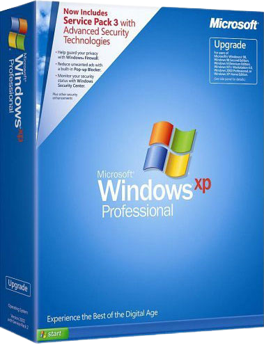

Windows XP recieved 3 major updates in the form of service packs.
The first was released in September 2002, It contained mainly bug fixes and general life improvements.
Service pack 2 was released in August 2004, It contained many security features such as safer email handling,
Improved network protection
and a more secure internet browning experiance.
The third and final service pack was released in April 2008,
It contaided extra support for more modern computers along with a newer version of Internet explorer.
This version was designed to be the last major service pack so it was designed to be the definitive version of Windows XP.
Windows XP has had a lasting legacy many years after it's initial 2001 release and is still loved by many around the world,
even if it may not be their main operating system.
However there are some old computer systems that still do rely on windows xp as their main operating systems to run software
that is not supported on modern systems, with 0.1% of devices still using Windows XP as their operating system.
